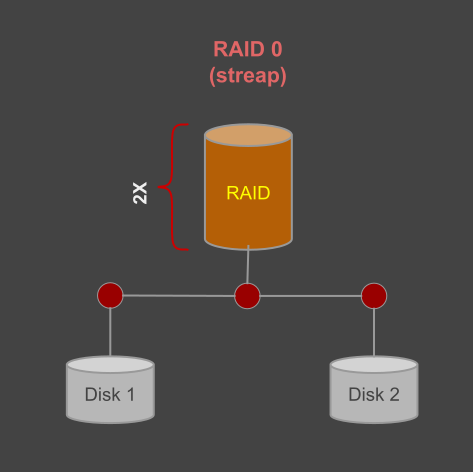
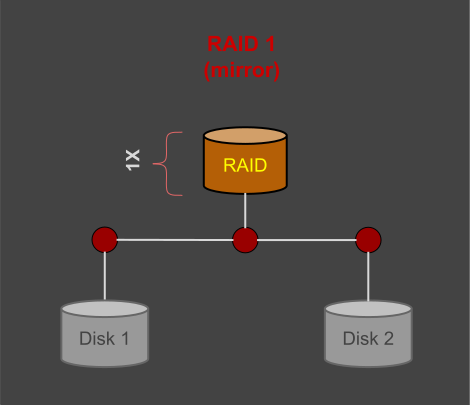
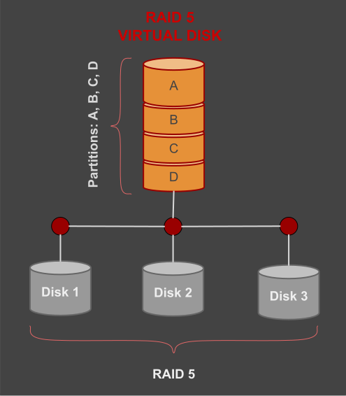
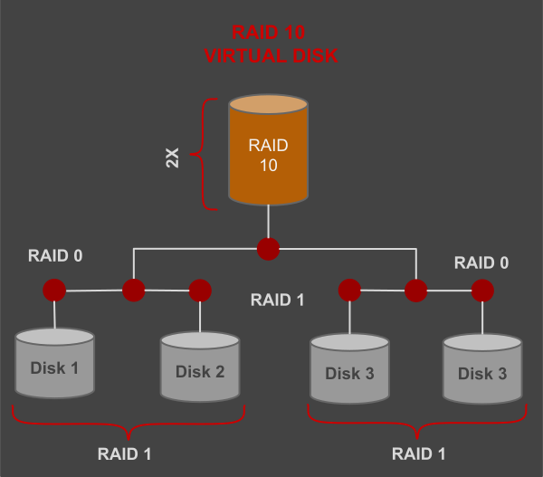
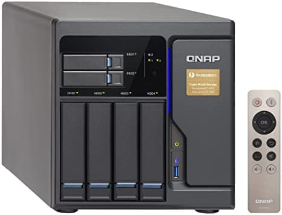
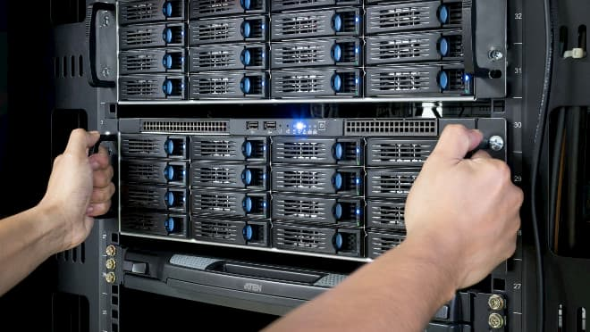

RAID Array
Page bookmarks
High capacity RAID
Backup on RAID
A backup disk must be a single disk on Windows. Sometimes you can use 2 independent disks for alternative backups. For windows NT you can specify several disks for backup that are automatically used by the system and do not have assigned a letter like the other disks. We do not recommend RAID array for desktop computers but only for servers or workstations. One large HDD can be superior to a bad RAID array.
RAID Inconvenience
- For RAID you use several disks that can make computer more heavy;
- You need a computer case with 4 or more HDD locations to create a RAID;
- RAID consume more power then a single disk in a computer;
- You should not use SSD for any RAID other then RAID0.
RAID Type
There are 2 ways to create a RAID array:
Software RAID and hardware RAID. For hardware RAID you need a specific card that is to control several disks. New PC motherboards have support for RAID using SATA controller. Software RAID is available as a feature of the operating system. RAID Parameters
RAID Parameters
There are 2 important parameters you have to consider when you decide what kind of RAID to create:
- CHUNK SIZE
- RAID LEVEL
CHUNK SIZE
To get good performance you must have a reasonable chunk size specific to your work or job.
For video editing: You want a lot of bandwidth, so you want a small chunk size. Anywhere from 512 bytes (one block) to 8 KB is a small chunk size. This will allow multiple disks to contribute to data stream at once increasing the data bandwidth.
For a database: You want to maximize your IOPS, which ideally means sending each I/O to only one disk. So you want a large chunk size – at least 64 KB or more. That large chunk will mean that most I/Os get serviced by a single disk and more I/Os are available on the remaining disks.
RAID LEVELS
RAID capacity, performance and reliability are in balance. Depending on your goal one kind of RAID is better then another. Here are the most important RAID flavors:
JBOD: Just a bunch of disks. is known as "spanned volume" on Windows. It is the best choice for a desktop PC. It increase the size of the volume and keep the performance at maximum. This is the most suitable RAID for a beginner who has too many disks in his computer.
RAID-0: Known as "striped volume" on Windows. RAID-0 is good for speed, you can use two or more hard drives.The storage capacity grow linear with the number of drives. On Linux RAID-0 can be created using MD-RAID, LVM or BtrFS.

The major limitation of RAID-0 compared to other RAID levels is that does not offer any redundancy. RAID-0 can be used to increase storage capacity, sequential read and sequential write.
RAID-1: Known as "mirrored volume" for Windows, RAID-1 is good for data safety and it increase the reading speed but you can use only 2 hard drives. RAID-1 offer 100% redundancy but will not increase your writing speed or disk space.
This is available only on Windows professional edition and Windows server edition. It is not available on Windows home edition.

Note: RAID chunk size do not have effect on performance for RAID 1.
RAID-5: is using 3 or more hard drives and has a special algorithm to distribute data across these disks. If one of the disk fail it can be replaced and array is rebuild by the system. The tricky part is to know which hard disk has failed. If you replace the wrong hard drive you will probably loose all the data.

RAID 6: is using 4 or more hard drives and is using double redundancy. So if any disk fail you can replace the disk but if you replace the wrong disk data is not lost. This RAID is using some more processing power to write and read from the HDD due to redundancy algorithm. This is the most used RAID in enterprise class NAS or server storage.
RAID-10 A server need minimum 4 disks to create RAID-10. The speed for write will be up to 2x faster then a single disk while the speed for reading is 4x faster. RAID-10 can use 4, 6 or 8 HDD for storing videos and pictures. RAID-10 is not good for servers.

Raid combination
Enterprise servers are using RAID-6, however combinations of RAID-6 and STRIP can create larger had drive arrays that are faster than RAID-6 by using RAID-60. You can find schema for different kind of combinations on the interned. Important to know is that it can be done.
Spare disks
Some RAID arrays have support for one or more spare disks. These disks do not have data but they are in reserve. If one of disks fail, the RAID is able to repair itself, disabling the defect disk automatically and rebuilding the array on the fly. This is a professional solution and is used frequent on critical servers.
Personal computer RAID
Personal computer sometimes enable RAID but most of the time a desktop computer has one single hard disk. If you use two disks then one is for operating system one is for backup. If you have 4 disks then you can use different size disks or same size disks.
First disk is for Windows System, and it can be SSD. Second disk is of large capacity and is for Backup. Disks 3 & 4 can be same size and connected in RAID-1. Do not ever use RAID-0 on a PC it is dangerous to loose data. The RAID 0 can break easy on a desktop computer if you sue SATA disks. On server there is a different class of hard-disks: Enterprise Class, made express for RAID. If you purchase this kind of disks you can have RAID at home.
NAS Storage
A NAS storage is an external box having several HDD installed in RAID. It is in fact a computer that is dedicated for large storage capacity. It can connect using a e-sata cable (external SATA) or fiber optics. In the next picture you can see an example of NAS storage. Feel free to investigate careful for your NAS or external drive solution before you buy. This is not for everyone but it can be useful for a small office to make backups on it or to store a large database.

Server / NAS RAID storage
RAID is usually required for servers. In the picture below we show you a RAC with several disks that are mounted. Each disk can be extracted easy without any tool. The drivers are installed in special drawers that have ventilation and a special handle that will disconnect the diver and then you can pull the driver out while the server is running.
Of course you must have a good reason to pull out a disk or an entire array. Usually a defect disk has a red light that indicate is defect and must be changed. If does not then you can measure temperature of disk and if one gets hot then it must be changed. Of course this id difficult if the drawer do not have a thermometer on it.

Server / NAS RAID storage
RAID is usually required for servers. In the picture below we show you a RAC with several disks that are mounted. Each disk can be extracted easy without any tool. The drivers are installed in special drawers that have ventilation and a special handle that will disconnect the diver and then you can pull the driver out while the server is running.
Of course you must have a good reason to pull out a disk or an entire array. Usually a defect disk has a red light that indicate is defect and must be changed. If does not then you can measure temperature of disk and if one gets hot then it must be changed. Of course this id difficult if the drawer do not have a thermometer on it.
You are ready! Go back & take the exam.